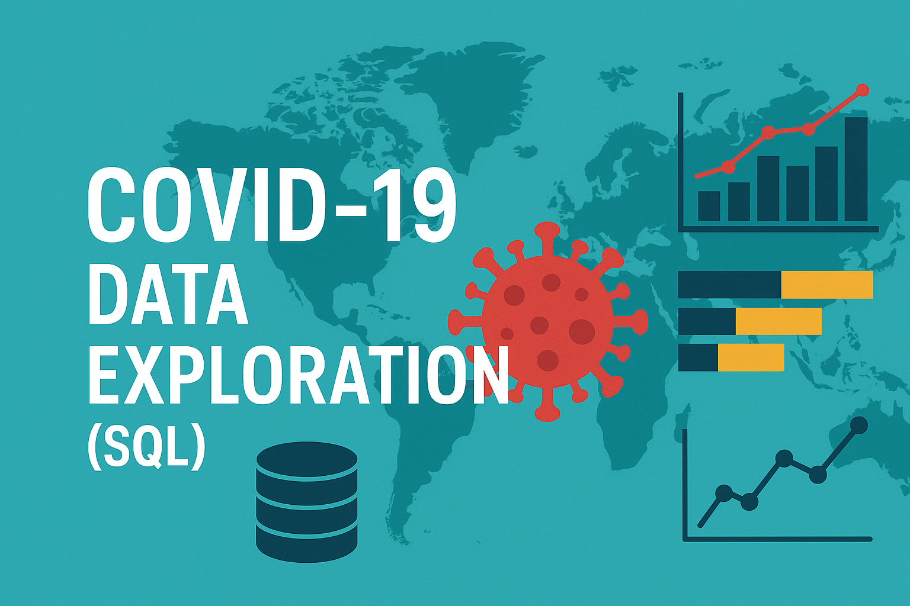
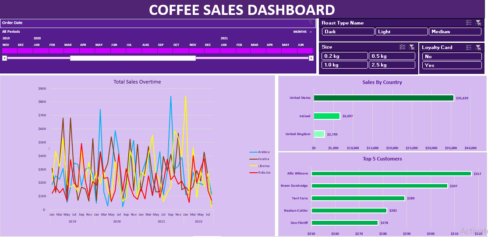

An interactive Power BI dashboard that tracks pharmacy sales,
profit, and stock performance. It includes KPIs, sales trends
and drug category insights with slicers for year, month, and drug filters.
Built with Power Query for data cleaning and DAX for advanced measures,
this project demonstrates my strong skills in data modeling, visualization, and business intelligence..


This dashboard offers key employee metrics
alongside insights on service years, job levels, promotions,
and commute distances to support effective HR decision-making and workforce planning.

Performed in-depth analysis of global COVID-19 data using SQL. Focused on infection rates, death rates, and vaccination trends across countries.
Utilized joins, CTEs, aggregate functions, and window functions to extract insights and compare the pandemic’s impact across regions.

Built an interactive dashboard in Excel to analyze coffee sales by time, region, product, and customer.
Uncovered insights like the popularity of dark roast, seasonal sales peaks, and the value of loyalty card users.
Provided actionable recommendations to improve customer retention, product strategy, and regional growth.